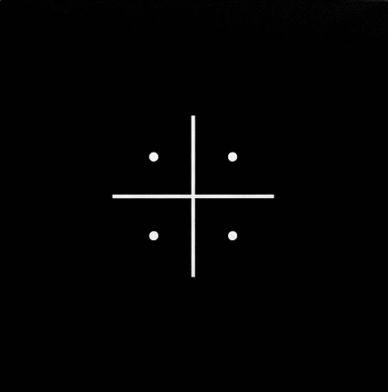

The Lexicon

[ Awaiting Query ]Cultural Directory ; Relational Database ; Est. 2026

[ Awaiting Query ]THE LEXICON is a relational database and cultural directory dedicated to the rigorous audit of fashion history, visual culture, and subcultural theory.
Founded in 2026 by Angelo Sanchez Dela Cruz, the archive functions as a proprietary research terminal; mapping the intersections of aesthetic language, structural power, and historical precedent. Operating outside traditional fashion media ecosystems, every indexed entry is anchored in stringent anthropological and critical commentary to ensure maximum academic and cultural relevance.
The directory prioritises the architectural analysis of avant-garde deconstruction, the genesis of underground aesthetics, and the surreal theatrics of modern image-making. Built as an evolving, high-density system, THE LEXICON is designed for academics, visual artists, and cultural critics who require uncompromising analysis over trend-based consumption.
System Communications
For editorial commissions, institutional inquiries, and requests for archival access; please route all correspondence through the primary directory channel.
Email: info@thelexicon.xyz
Location: London, United Kingdom
The archive is maintained independently. All network correspondence is monitored and processed systematically.